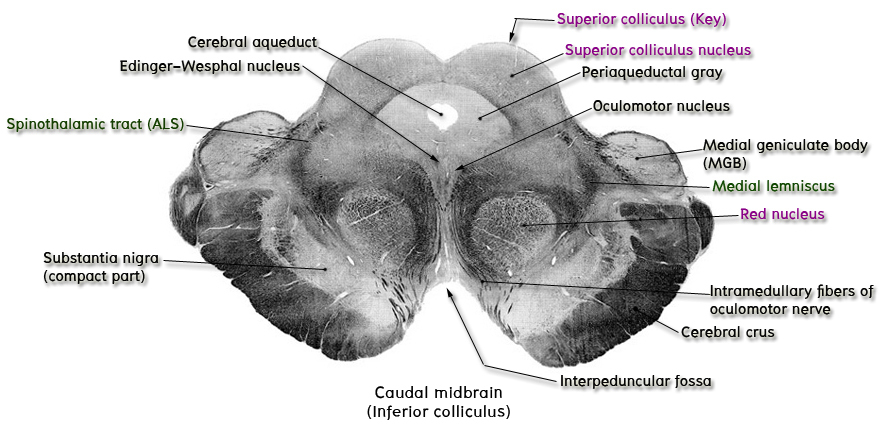

ระดับ rostral part of midbrain หรือระดับ superior colliculus

Key structure ที่ต้องชี้แสดงในระดับนี้คือ superior colliculus ซึ่งเป็นเนินที่อยู่บนผิวด้านหลังของ tectum ลึกกว่าเนินนี้ให้ชี้แสดง nucleus of superior colliculus ซึ่งเป็น nucleus ที่มีลักษณะเป็นชั้น ๆ (ต่างจาก nucleus of inferior colliculus ที่คล้ายแก้วแชมเปญ)
ที่บริเวณ anterior part ของ periaqueductal gray matter (ซึ่งล้อมรอบ cerebral aqueduct เอาไว้) ให้ชี้แสดง oculomotor nuclei ซึ่งเมื่อรวมกัน 2 ข้าง แล้วมีลักษณะเหมือนรูปตัว V